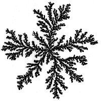

| Experimental parameters include |
the hardness of the agar on which the bacteria grow and |
the nutrient concentration. |
| Friendly conditions, soft agar and abundant
nutrients, result in compact growth with smooth boundaries. |
| In more unfriendly
conditions, the bacteria can grow in patterns (on the left) resembling
DLA
clusters (on the right). |
 |
|
 |
|
| A straightforward explanation is that growth is limited by the presence of
nutrients, in turn limited by (slow) diffusion from the perimeter of
the Petri dish, where the bacteria have not yet grown. |
| Nutrient diffusing inward
is more likely to be absorbed by the outer-most branches of the bacteria colony, so
there is a shielding effect like that of DLA. |
| But is this right? Several groups are
studying this problem. |